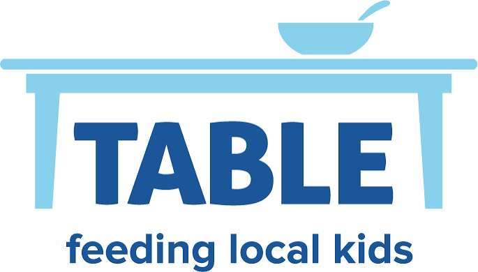

Most of my work happens early in a project, before a team knows exactly what the problem is: finding the right people, talking with them, and turning what they say into decisions. Three projects below, one still in progress.
Case study · Generative research
A Seat at TABLE
A semester-long human-centered design project with TABLE, an Orange County nonprofit that feeds food-insecure kids. TABLE asked us to create more ways for families to volunteer together. The research showed that families already wanted to volunteer more; scheduling and communication were what held them back.

Role
UX researcher on a five-person team
Partner
TABLE, a 501(c)(3) nonprofit in Orange County, NC
Timeline
One semester, full human-centered design cycle
Participants
Parents, grandparents, a 4-year-old, and TABLE staff across four sessions
Summary
Problem
TABLE wanted more opportunities for parents and children to volunteer together.
My role
UX researcher on an interdisciplinary team of PhD, MPH, and MPP students.
Methods
Two listening sessions with card sorts, two co-ideation sessions, empathy mapping, insight statements, value/effort prioritization, and storyboarding. Fifteen participant seats across the four sessions, with several people returning.
Key insight
Nearly every pain point was logistical (shifts booked months out, one-way communication, no way to fill last-minute cancellations), while the benefits families described were about relationships and values.
Outcome
Three concepts and a recommended pilot, TABLE Birthday Parties, presented to TABLE leadership with the three riskiest assumptions and a plan for a small test party.
The briefHow might we create more opportunities for parents to volunteer alongside their children to advance TABLE's mission while fostering a culture of volunteerism and social justice?
After the listening sessions we rewrote it: How might we expand and reimagine parent-child volunteering at TABLE in ways that are flexible, engaging, and build community, given constraints with scheduling and communication? The original version assumed parents needed more motivation. What we heard suggested the motivation was already there.
Phase 1 · Inspiration
Talking to two different kinds of volunteer families
We ran two listening sessions with deliberately different participants, because parents who volunteer at TABLE aren't one user group. The first session included three parents and a TABLE staff member. These families had volunteered for more than ten years, had teenage or college-age children, and mostly delivered food. The second included five parents and grandparents who had volunteered for one to two years, had children aged 5 to 12, and mostly worked kids' shifts.
Conversation starter. "Can you share one memory that stands out to you when you volunteered with your child?" We opened with stories before getting to logistics.
Guided discussion with five or six open questions about their experience and motivation, with facilitators drawing in quieter participants.
Card sort. Participants wrote down what makes volunteering with their kids hard, then grouped the cards however made sense to them, so the categories came from them rather than from us.
Methods and participants for the two listening sessions. Sampling across tenure and children's ages is what made the differences between groups visible.
Phase 2 · Synthesis
Empathy mapping across extreme and mainstream users
We placed every observation on a Think & Feel, See, Hear, Say & Do, Pain, and Gain grid and color-coded each note by the kind of participant it came from. The longest-tenured families and the newest ones experience different versions of the same program, and the contrast between them pointed to most of the design opportunities.
The full empathy map. Note colors show whether a data point came from one of two extreme groups or from mainstream users. Nearly everything under Pain is logistical: scheduling, communication, cancellations. Nearly everything under Gain is about relationships and values.
Families wanted to teach their kids about privilege, meet other volunteer families, and see their effort help their own community. Each goal ran into the same obstacles: shifts that book months in advance, communication that only goes one way, and no way to reach the waitlist when someone cancels.
Phase 3 · Insight statements
From quotes to insight statements
We built each insight in four steps: raw data, theme, the tension behind it, and a final insight statement. That chain meant every statement could be traced back to something a participant said or did, the same audit trail I keep when coding interviews for academic work.
Shift availability
Parents of young children want volunteering to be part of their routine, but limited shifts and no real-time communication make opportunities feel scarce and hard to reach.
Child education
Parents see TABLE as a way to teach their kids about privilege and giving back without saviorism, but scheduling conflicts make it hard to show up consistently.
Local impact
Families want to see their effort help their own community ("the children my children sit next to in class"), but limited opportunities keep them from feeling that impact.
Community building
Parents want to get to know other volunteer families, but different people show up each week and shifts leave little time to connect.
Two of the four insight tables. Each statement can be traced back to the quotes and observations in the Data column.
Phase 4 · Ideation
Generating ideas with families
We brought participants back to generate ideas with us in two more sessions: one with two parents of young children, a TABLE staff member, and a 4-year-old, and one with two long-time volunteer parents of college-age children. Most of the adults had joined an earlier session. We started with a warm-up (how many uses for a water bottle can you think of?), moved to quick written and sketched ideas, then ran a mash-up that combined a TABLE kids' shift with a Little League tournament to push past the obvious answers. Bundling then grouped the scattered ideas into fuller concepts.
Ideation methods and who took part in each session.Value versus effort. Value meant fit with the design question and our insights; effort meant TABLE's own cost in time, money, and space.
We scored effort by TABLE's own cost in staff time, money, and space, since a small nonprofit can't act on a concept that requires hiring new staff.
Phase 5 · Concepts
Three concepts and one recommendation
Home Shopping and Bagging
Families get a shopping list, assemble food or birthday kits at home on their own schedule, and donate them to TABLE. No fixed shift required.
High value · Low effort
Hot Food Prep at TABLE
Volunteer families cook nutritious meals on site with food safety guidance, adding nutrition education for volunteers and recipients.
High value · Very high effort
TABLE Birthday Parties
Birthday parties hosted at TABLE where guests pack food kits, families redirect gifts as donations, and teen volunteers run the activities.
Very high value · Moderate effort · Recommended
For each concept we wrote a value proposition for each group it would serve (for Birthday Parties, host families and teen or college volunteers) and listed ten desirability, feasibility, and viability assumptions behind it. A vote on the Birthday Parties assumptions identified the three riskiest:
Parents and kids will choose a purpose-driven celebration over a traditional party.
Party fees and donations will bring in enough to justify TABLE's time and resources.
Teen and college volunteers can be recruited and trained within TABLE's current capacity.
Storyboard for the recommended concept, from the parent's original problem through discovery, the party itself, its impact, and word of mouth.
Our recommended next step was a small test party with friends and family to try out the activities and the space, record what happened, and find the logistical problems before inviting the public.
What I'd do differently
We never spoke with the families TABLE serves. Two of the three concepts affect them directly (hot meal prep and kit contents), and we based those parts on assumptions. In a longer project, that's the first gap I'd close.
I'd also test before recommending. We ended with a ranked list of assumptions, which is honest, but even one low-cost test party would have turned the riskiest assumption into evidence.
Case study · In progress
AI in the Classroom
Through UNC's AI Fellows program, I'm interviewing faculty and students about how they use generative AI in their courses. What I learn becomes requirements for the AI-enabled course tools that faculty in the program are building.
Role
Graduate research assistant; interviewer and analyst
Faculty design assignments and set course policies. Students decide how AI gets used day to day. The two groups can see the same tool very differently, so I'm interviewing both instead of designing from one side.
This builds on a paper I co-authored on teaching AI literacy to faculty and students at the same time (Upskilling Everyone, under review at Pedagogy in Health Promotion). That paper approached the question from training; this study approaches it from design.
How the research feeds the tools
I'm analyzing the interviews qualitatively and translating what I find into design requirements that the faculty building tools in the program can act on. The research comes first, and the tools follow from what faculty and students say they need.
Coming to this page
As analysis moves along, I'll add the research questions, the sample, an excerpt from the interview guide, part of the codebook, and the requirements that came out of it.
Speculative design concept
EchoCare
A one-week rapid prototyping exercise in a graduate course: pick a public health problem, propose an AI-powered solution, and build a working prototype. I designed a harm reduction companion app for people who use drugs. It's a concept built from secondary research and my own field experience, and it hasn't been tested with users yet.
Role
Sole designer and researcher
Timeline
One week, graduate hackathon (HBEH 690)
Methods
Secondary research, concept design, interface prototyping, equity and risk analysis
Tools
Canva; ChatGPT and DALL·E for early ideation
Status
Concept, not user-tested
The problem
The services exist, but people can't reach them
People who use drugs face stigma, criminalization, and patchy access to the services that keep them alive: sterile syringes, naloxone, and medication for opioid use disorder. Those services do exist, but they're unevenly distributed, hard to find, and often run by institutions people have good reason to distrust. I treated this as a discovery and access problem as well as a supply problem.
I've worked in this area for years through harm reduction volunteering, reentry work, and research on rural opioid systems, so the framing draws on direct experience as well as the literature.
The concept
Four options and no login
The home screen offers four choices and no account, because someone in a hard moment shouldn't have to dig through menus. Each option maps to a need documented in the harm reduction literature.
Home screen. Four options, no account, no sign-in wall.
Chat with Echo: a nonjudgmental conversational companion grounded in CBT principles and harm reduction practice.
Harm Reduction Tips: evidence-based guidance on safer use, overdose response, and preventing infectious disease.
Find Resources: location or ZIP-based referrals to syringe service programs, naloxone sites, MOUD providers, and shelters.
Safe-Use Mode: wearable-linked vital sign monitoring that alerts EMS and designated contacts if it detects signs of overdose.
Interface decisions
Writing the voice
Much of the design work was the tone of the conversation. In a stigmatized area, whether someone keeps using an app can depend on whether the first reply sounds like judgment or care, so I scripted the chat flows and treated the copy as the main interface.
Scripted conversations for three scenarios. In the third, a disclosure of shame gets validation and an offer to connect with a human peer navigator, with no lecture and no push toward treatment.
Safe-Use Mode keeps a STOP control visible at all times. Monitoring that can't be turned off would feel like surveillance.Resource Finder accepts a ZIP code instead of requiring location access, which can be a trust barrier for this population.
Equity and risk
Who this leaves out, and what could go wrong
Who's left out: anyone without a smartphone, a data plan, or digital literacy. Mitigation: an SMS version, plus shared devices at harm reduction centers and shelters.
Misinformation: all content curated and updated with harm reduction professionals rather than generated by a model on the fly.
Privacy: anonymous use, encrypted conversations, and location used only for referrals and never stored. For a criminalized population, a data breach can be dangerous.
Over-reliance on AI: direct paths to human peer navigators and counselors, and constant clarity that Echo is not a person.
The limitation
EchoCare hasn't been tested with the people it's meant for. I know this problem space well from years of work in substance use, reentry, and health equity, but people who use drugs haven't yet had a voice in this design. A harm reduction tool built without them is the same failure my academic work documents, which is why the next section matters more than the screens.
Next
The research I'd do first
Recruit through people they already trust. Work with syringe service programs and peer networks, have peer navigators help shape the sessions, pay participants for their time, and collect no identifying information.
Test the voice before the features. Share scripted chat transcripts and ask whether Echo reads as care or condescension, and what would make someone close the app.
Ask about trust directly. Which data people would and wouldn't share, and whether location access, monitoring, or an account would keep them from using it.
Then pilot. Run the two-region pilot from the original concept, one urban county and one rural, measuring usability, referral accuracy, and trust.
Most of my interviewing and analysis experience comes from academic studies. Three that are closest to UX research work:
Rural emergency preparedness
52 semi-structured interviews with people who use drugs and local stakeholders in two Appalachian Ohio counties, with multiple coders. The finding that mattered most for practice: preparedness plans existed, but staff didn't know them and the plans left out people who use drugs.
Implementation strategy tracking
A structured literature review and a recorded, facilitated debate among researchers, turned into a decision framework for how much tracking a project should do given its setting, resources, and goals. I'm first author and presented it at SIRC 2026.
Provider drinking in Vietnam
16 interviews with HIV clinic providers, analyzed with the Framework Method. Providers' accounts pointed to workplace hierarchy and social obligation more than individual choice, which moves the target for intervention from the person to the workplace.